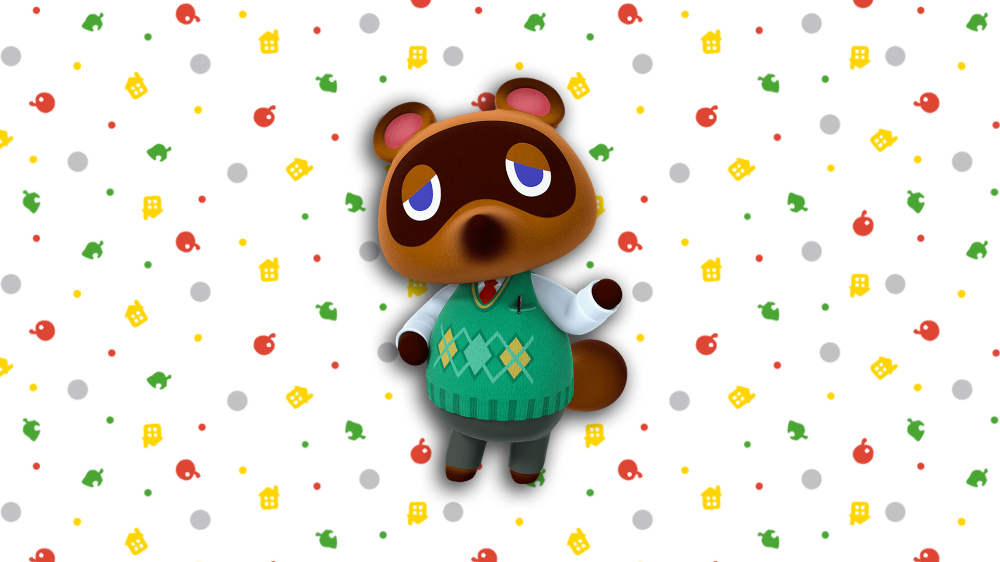

About Tom Nook
Tom Nook is a greedy little Japanese raccoon dog. He owns a swath of businessess all under the blanket of "Nook". Depending on your version of Animal Crossing, you can find him at a variety of places just existing to steal your hard-earned bells.
Fun Facts
- He's not just a raccoon. He's a "tanuki", whatever that is.
- Every time you pay off your loan, he swindles you into further crippling debt.
- He has a pair of twin nephews, Timmy and Tommy, who will soon grow up to be worse than we could ever imagined.
Friends
Tom Nook has few friends. This is probably a result of his greed. Although, he seems to get along with Isabelle (his secretary) and his twin apprentices, Timmy and Tommy. No surprise here. Click the links to find out more about them.